Open revised Brick Lab. R1: six KEEP, two REWORK. All revised content needs new human approval.
Real browser recordings use an external test driver. No autopilot is present in normal play. Physical Pixel FPS, vibration and comfort remain unverified.
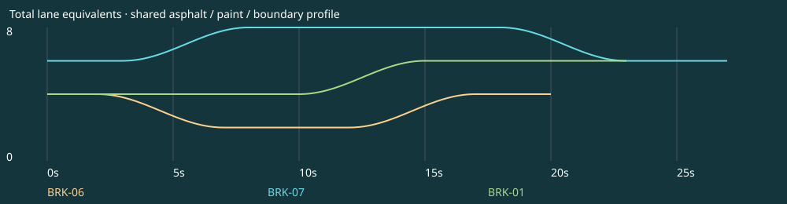
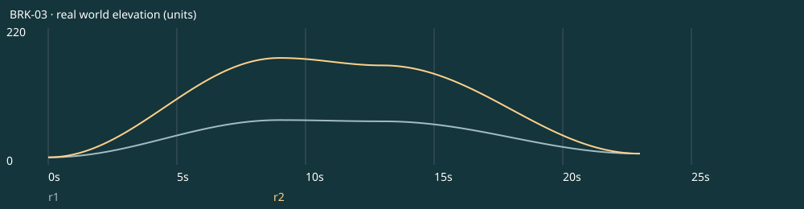
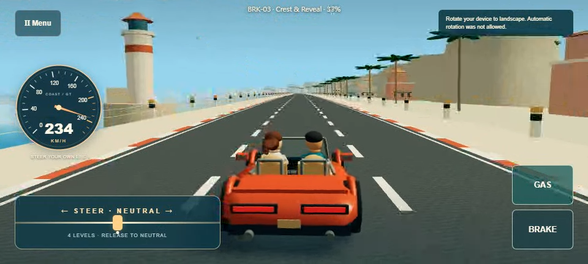
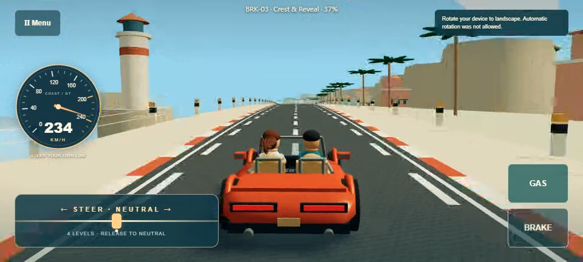
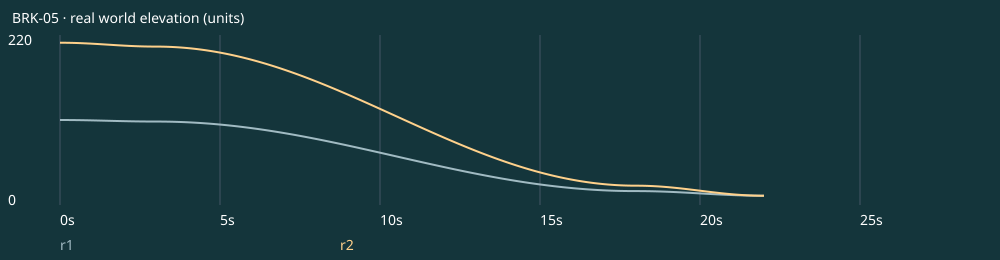
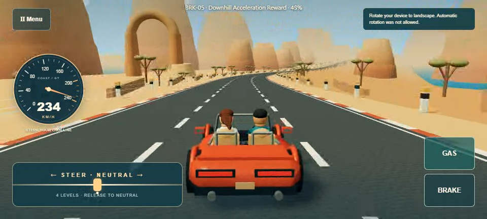
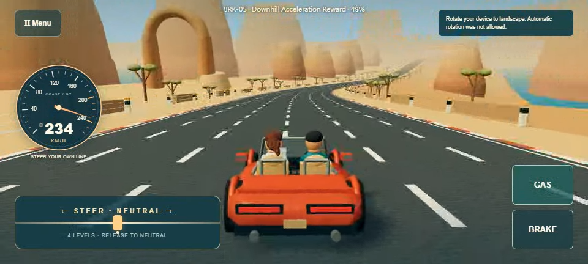
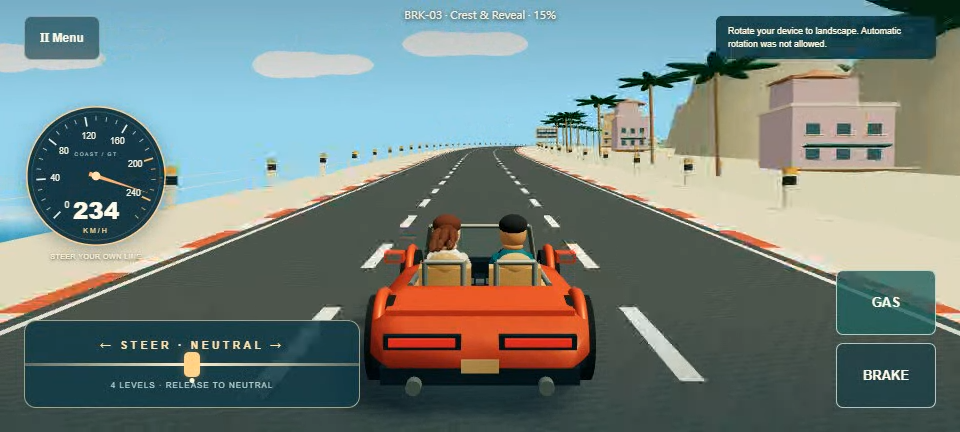
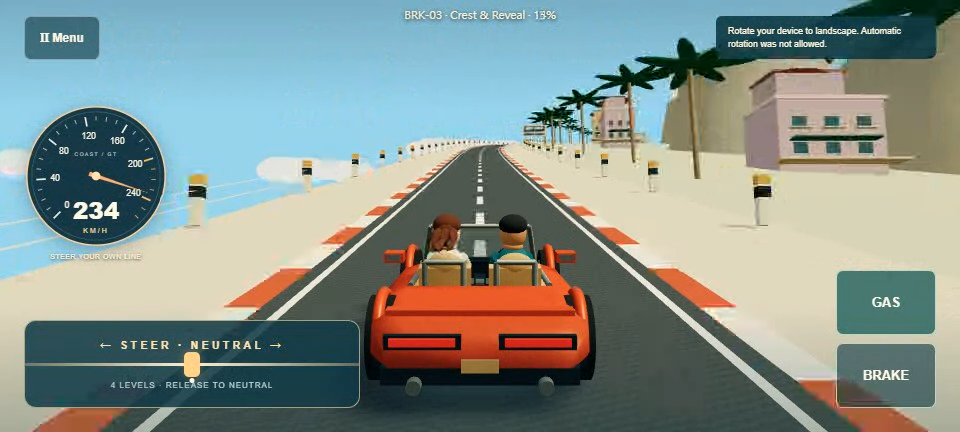
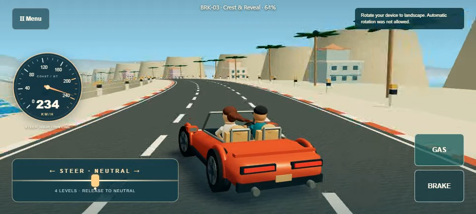
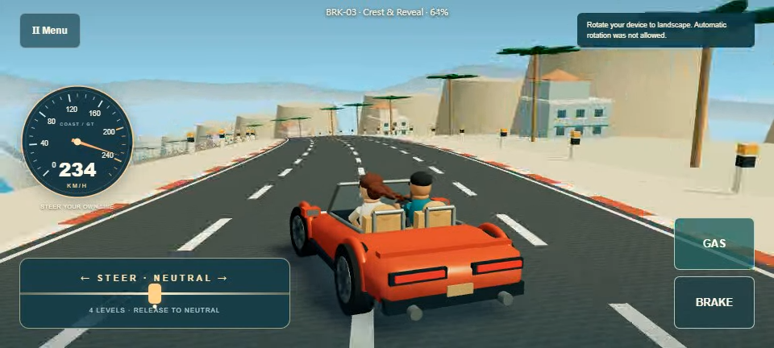
22.62s · 0 offroad samples · new human review UNREVIEWED
Play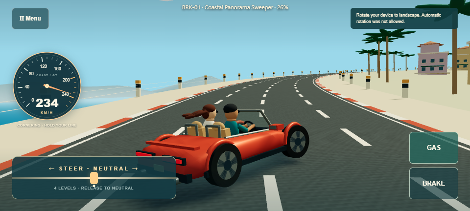
18.68s · 0 offroad samples · new human review UNREVIEWED
Play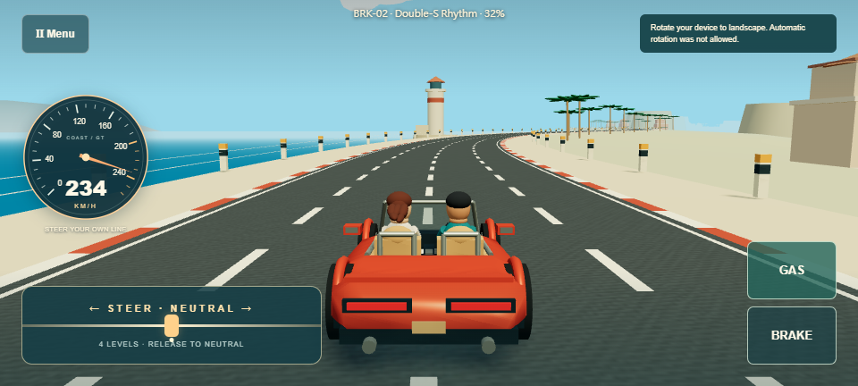
22.62s · 0 offroad samples · new human review UNREVIEWED
Play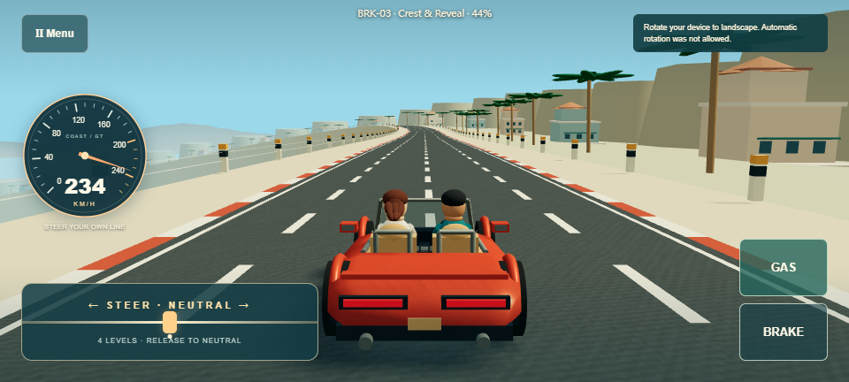
24.28s · 0 offroad samples · new human review UNREVIEWED
Play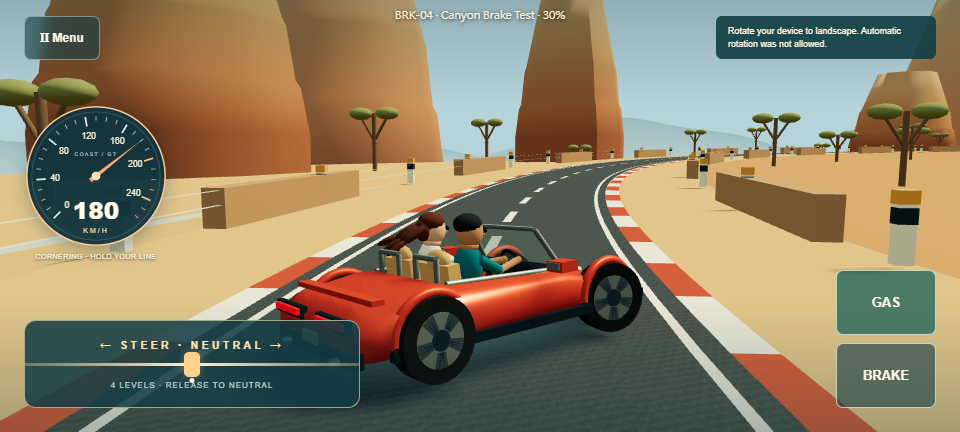
21.99s · 0 offroad samples · new human review UNREVIEWED
Play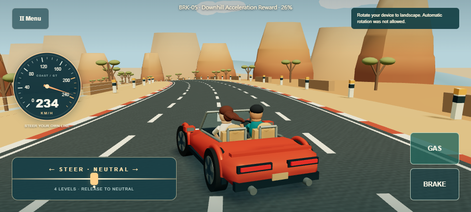
19.67s · 0 offroad samples · new human review UNREVIEWED
Play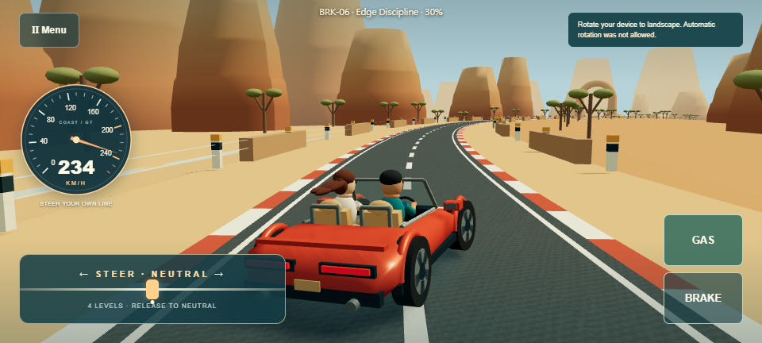
26.54s · 0 offroad samples · new human review UNREVIEWED
Play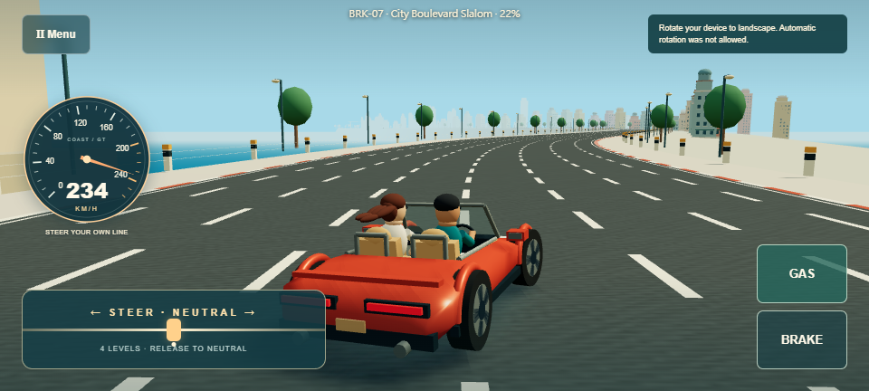
26.64s · 0 offroad samples · new human review UNREVIEWED
Play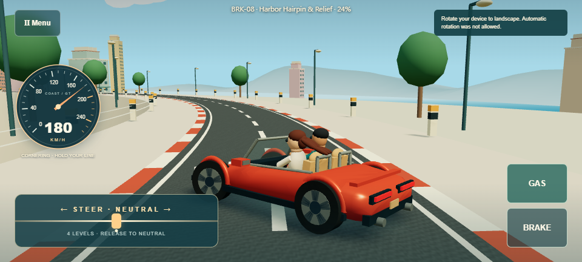